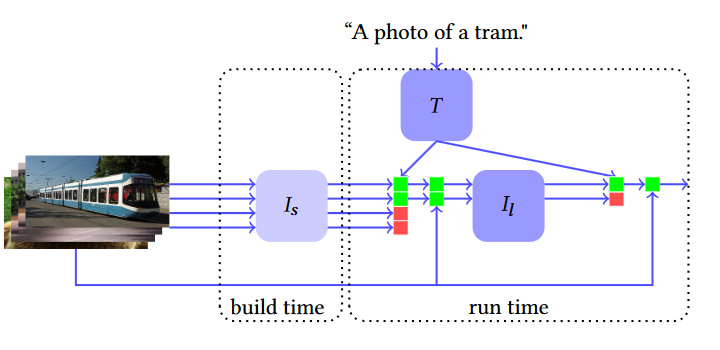

Model Cascades for Efficient Image Search
Model Cascades for Efficient Image Search
Modern neural encoders offer unprecedented text-image retrieval (TIR) accuracy.
However, their high computational cost impedes an adoption to large-scale image searches.
We propose a novel image ranking algorithm that uses
a cascade of increasingly powerful neural encoders
to progressively filter images by how well they match a given text.
Our algorithm reduces lifetime TIR costs by over 3x.
Introduction
Search engines are the most widely used tool for information retrieval (IR) on the internet — Google alone processes over 8.5 billion searches a day. A search engine takes as input some query and returns a list of documents ranked by how well they match . Keyword-based search ranks results by naively matching query keywords with documents. Semantic search tries to improve on keyword-based search by matching queries to documents based on their meaning.
A fruitful domain for semantic search is TIR, where documents are images and queries are texts. New semantic search engines for TIR leverage recent advances in deep learning for processing images and natural language. Typically,
these engines use neural networks to construct an image encoder and a text encoder that process text and each image
into embeddings and that capture their semantics. Then, the engines rank images in
by some similarity measure of and .
In large-scale search scenarios, may contain several million documents. This makes it
computationally expensive to compute embeddings for all documents.
We seek to lower this computational cost while preserving search quality. To this end, we measure search quality as Recall@, which denotes the fraction of searches that include the desired result in the top- results. Even small increases in can
significantly improve the Recall@. Hence, for , the top- results
of a large and expensive encoder are likely included in the top- results of a small and cheap encoder . This observation leads to our main idea: \emph{At build time, pre-compute with . Then, at runtime, to handle a query , retrieve the top- results
for some , recompute with and return the top- results.}
This idea, illustrated in \Cref{fig:arch_detail}), naturally extends to a cascade of progressively larger encoders that compute progressively smaller sets .
In practice, it is possible for over 90% of all documents in to never be included in any search result over the lifetime of a large-scale search engine. This means that our technique would evaluate on less than 10% of , resulting in significant lifetime computational savings. In this work we make the following contributions:
- We introduce a novel cascading algorithm for fast TIR.
- We show that our algorithm speeds up TIR on standard benchmarks by over 3x at no reduction in search quality.
- We investigate the benefits of deep cascades and
demonstrate a 2x reduction in query latency.

Related Work
Model cascading is a recurrent theme in the literature on efficient machine learning (ML) systems.
FrugalML minimizes access costs of ML APIs by cascading two calls to a cheap API and to an expensive API.
NoScopespeeds up object detection in videos by splitting a reference model into a squence of two specialized models.
Model cascades have also been applied to facial key point estimation, pedestrian detection and other domains.
Recent work on encoders for TIR is dominated by transformer-based bi-encoders (BEs) and
cross-encoders (CEs). BEs process images and texts with separate encoders, whereas CEs also add cross-connections between the encoders. Hence, CEs are more powerful, but need to recompute for new queries. This makes them impractical for large-scale searches and unsuitable for our idea. Therefore, we focus on BEs.
Several methods for fast TIR with CEs have been developed: VLDeformer trains a decomposable CE that can be used as a BE at inference time with minimal loss in quality.
CrispSearch, LightningDot and Retrieve Fast, Rerank Smart all introduce two-level sequences of a BE whose results can be cached for approximate inference and a CE for precise inference on a subset of the BE results. This is similar to our idea but differs in two key ways:
First, we consider arbitrarily deep model cascades, whereas these approaches are fundamentally limited to two models.
Second, we target BE inference instead of CE inference. In fact, this suggests that our approach could complement these existing techniques as the BE model in their first stage for even faster TIR.
Models and Methods
Cascaded Search
Let be a collection of images
that we want to query with a cascade of BEs. Consider a cascade of image encoders
that all use the same text encoder . We propose algorithm Cascade Search to query by ranking all images with and subsequently the top images with . Note that with , Cascade Search reduces to a standard BE search.
Computational cost
Assume that function Query in Cascade Search invoked times and denote the computational cost ofCascade Search with .
We want to minimize the lifetime computational cost of Cascade Search, that is as . We can decompose into the sum of the lifetime image encoding cost and some term that is independent of and thus irrelevant for optimization over .
Next, we formalize our introductory observation on the set of a search engine’s lifetime search results into the following key assumption:
Cascaded Search. Here, sorts the images in by the cosine similarity of their encodings with text encoding .
- Input : , ,
- Init: for do
- Function Query(text)
- for to
for ,do
end for
Return
End Function
Assumption
For , let be the set of all images pushed to in query . Then, .
If have costs , then Assumption implies that . Hence, the 2-level cascade is cheaper than the 1-level cascade if the speedup factor exceeds 1.
We note that Assumption implies no computational advantage of a over an equally powerful -level cascade with . However, if is low enough that is not hit, then the -level cascade speeds up individual queries by a factor of
This is useful, because unlike uncascaded models that execute the expensive image encoder only during build time, 2-level cascades have a runtime overhead when is not hit. Hence, deep cascades can mitigate the increased latency of early queries in 2-level cascades.
Creating the Cascade
| Dataset | Method | R@1 | R@5 | R@10 | Speedup |
|---|---|---|---|---|---|
| MSCOCO | No Cascade | 30.1 | 54.2 | 64.6 | 1x |
| Cascade | +0.2 | +0.4 | +0.5 | 3.2x | |
| Flickr30k | No Cascade | 29.9 | 52.0 | 61.3 | 1x |
| Cascade | +0.8 | +2.0 | +2.4 | 3.2x |
We apply our proposed methods to CLIP, a powerful transformer-based text-image BE. CLIP uses the GPT-2 architecture for the text encoder, the vision transformer (ViT) architecture
for the image encoder and matches images to texts by the cosine similarity of their embeddings.
% Several pre-trained ViT encoders of different sizes are publicly available.
We create a cascade from publicly available trained CLIP image encoders of different sizes.
Experiments
Experimental Setup
-
Metrics Given a dataset of image-caption pairs we measure the Recall@ (R@) metric as the fraction of captions in whose corresponding image is among the top- search results.
In line with the IR literature, we report the Recall@ for . In addition, we report for 2-level cascades the lifetime speedup and for deeper cascades the query speedup as discussed in Algorithm. We run all experiments on an Intel i7-11800H CPU at 2.30 GHz with turboboost disabled and compute speedups by measuring the total CPU time of queries. -
Datasets We evaluate our algorithm on the MSCOCO validation dataset with 5k samples and on the Flickr30k dataset with 32k samples.
-
Parameters We set the top- value of encoder to and assume a lifetime return fraction of .
2-level cascades
We use the Huggingface CLIP implementation with a ViT-B/16 image encoder as our uncascaded baseline . We use the faster ViT-B/32 image encoder as to create the 2-level cascade .
Table 1 shows empirical results. The cascaded model reduces lifetime computational costs threefold. Surprisingly, the cascaded model achieves at the same time consistently higher Recall@ than the uncascaded model. One explanation may be that ViT-B/32 initially processes input images into 32x32 tiles. Since these tiles are more coarse-grained than the 16x16 tiles used by ViT-B/16, they may offer superior approximate filtering of search results. Hence, could determine the top images more effectively than . Further research is needed to explain why 2-level cascades show superior Recall@k.
-level cascades
| Dataset | Method | R@1 | R@5 | R@10 | Speedup |
|---|---|---|---|---|---|
| MSCOCO | No Cascade | 32.5 | 57.2 | 68.1 | 1x |
| Cascade | +0.5 | +0.2 | -3.0 | 2.0x | |
| Flickr30k | No Cascade | 35.3 | 58.5 | 67.4 | 1x |
| Cascade | +1.0 | +0.0 | -3.7 | 2.0x |
Table: Recall@ in % and query speedup of the 3-level cascade ([ \textrm{ViT-B/32}, \textrm{ViT-B/16}, \textrm{ViT-L/14} ]) with ( m_2=10 ) over the 2-level cascade ([ \textrm{ViT-B/32}, \textrm{ViT-L/14} ]).
Note: The table above shows the recall at ( k ) (R@( k )) and the query speedup of a 3-level cascade over a 2-level cascade for different datasets.
As noted in Section Cascaded Search, -level cascades offer no reduced lifetime costs over -level cascades, but may speed up individual queries. This is important for large image encoders that slow down queries, such as the ViT-L/14 encoder that is 3.3x slower than ViT-B/16. Therefore, we introduce the 2-level cascade and compare it against the 3-level cascade . Concretely, we set a target speedup of 2x and use formula \Cref{eq:queryspeedup} to determine the corresponding number of top ranked images on which \CrefCascaded Algotithm should execute ViT-L/14. This yields . Table 2 reports the empirically measured query speedups and the change in Recall@ of the 3-level cascade. Similarly to Table 1, the deeper cascade offers superior predictions. However, for Recall@10 the predictions become significantly worse. This is because Cascaded Algotithm only uses ViT-L/14 to rerank the top images, so the set of the top 10 images stays unchanged. Hence, for , the cascade is equivalent to the less powerful cascade with respect to the Recall@10 metric.
Conclusion
Our experiments show that Cascaded Algorithm can lower lifetime computational search costs by over 3x at no reduction in search quality. At the same time, deeper model cascades can mitigate the increase in latency of early queries.
However, single-digit speedups may not sufficiently reduce computational costs to economically rank large-scale image databases with expensive transformer-based BEs. Instead, a practitioner may use traditional search engines to retrieve the top- images and apply a neural search cascade on top of it. This heterogeneous cascade may offer a viable path towards the integration of state-of-the-art neural networks with established image search platforms.
It is important to note that all our observations rely on Assumption 1. While we have provided anecdotal evidence to support our choice of the lifetime return fraction as ,different search scenarios likely vary in and achieve accordingly different speedups.